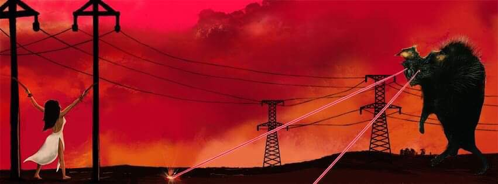
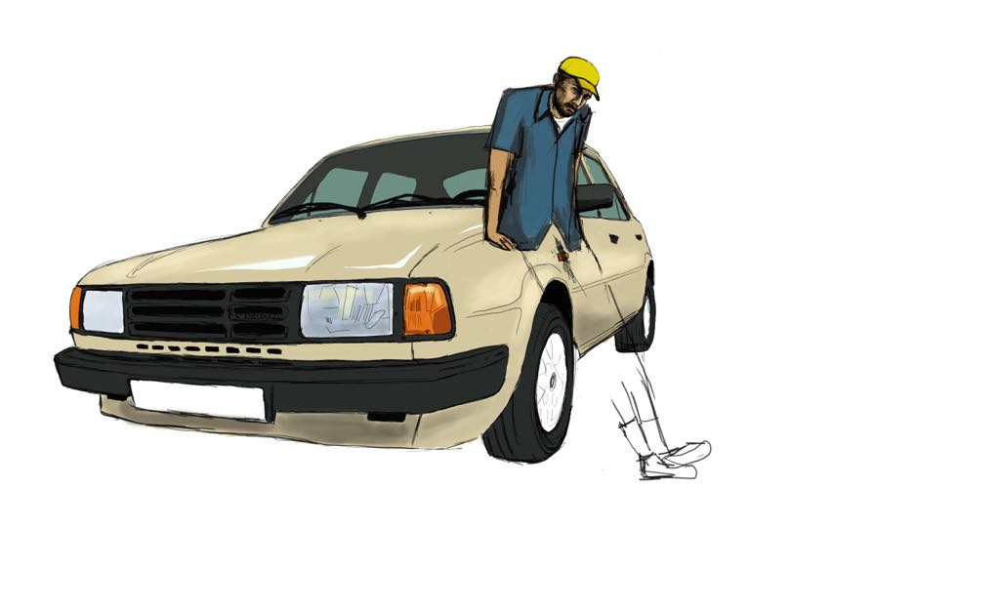
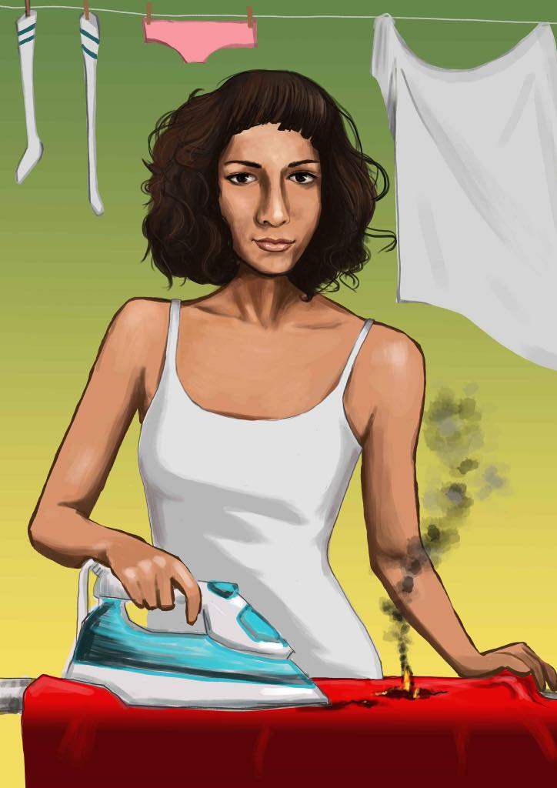
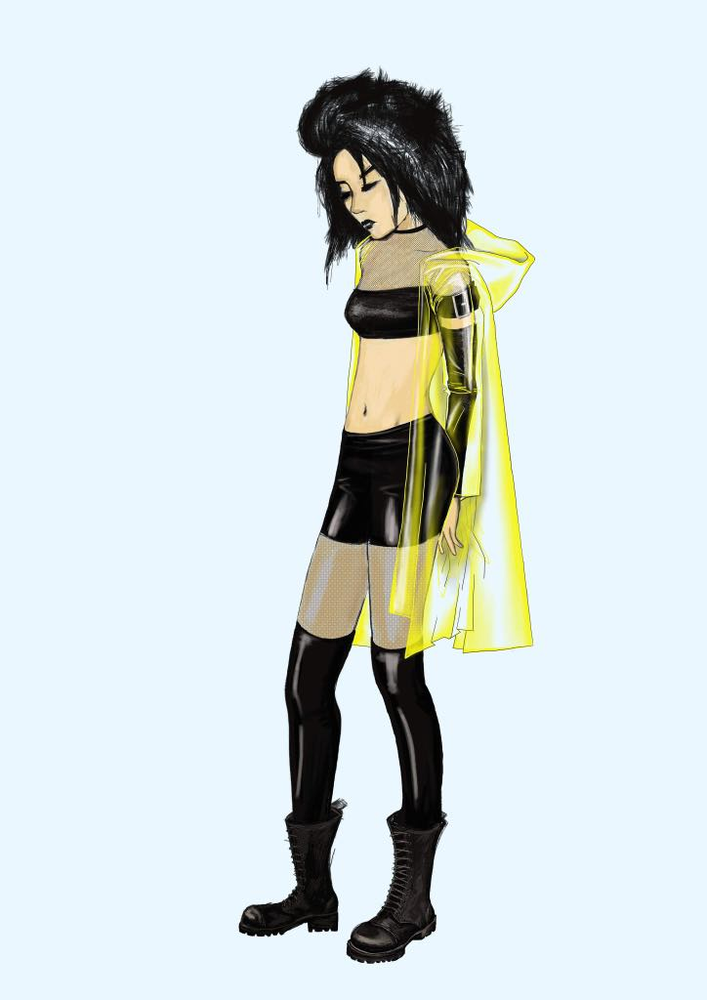
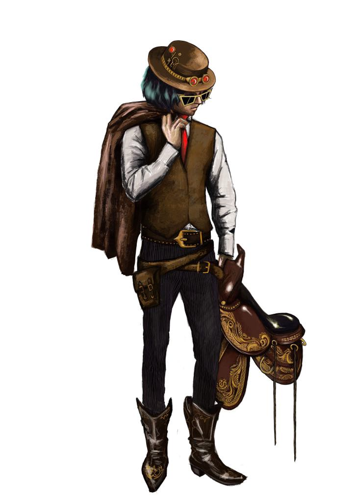
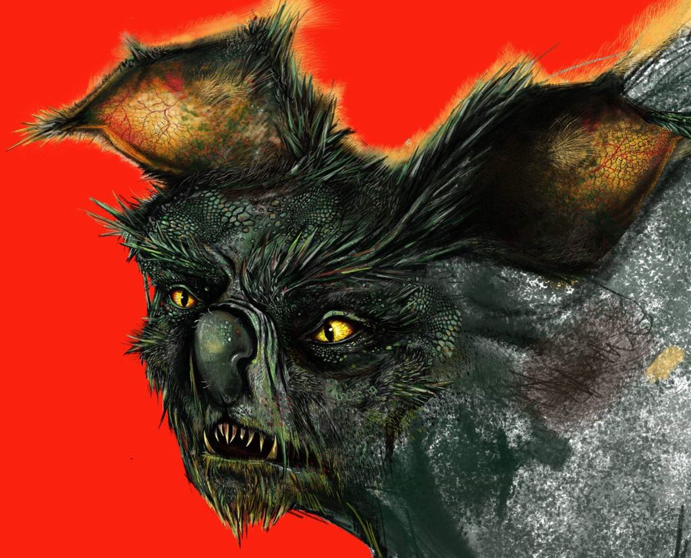
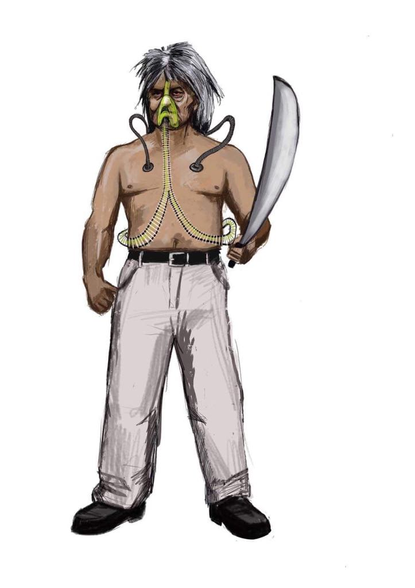
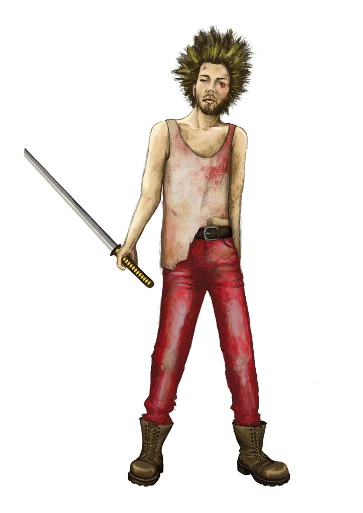
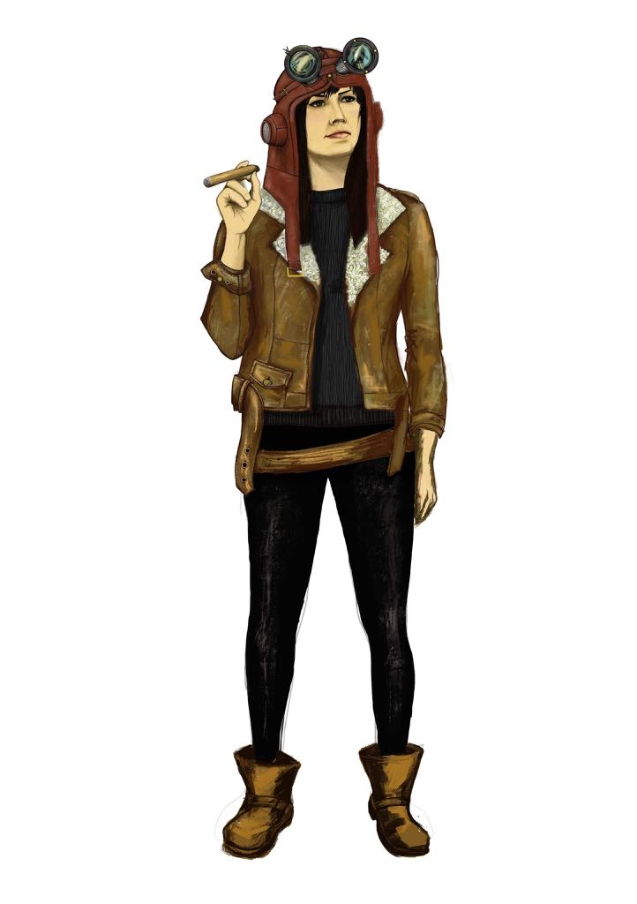
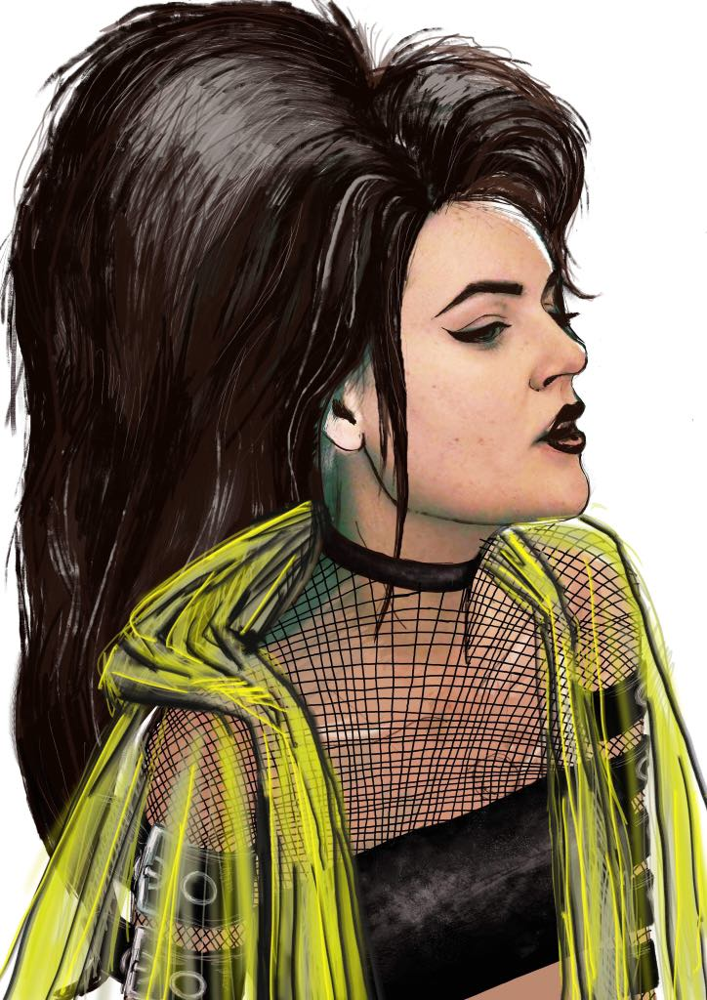

THE RICSÁRDGÍR MOVIE

A körítés
Rengeteget gondolkoztunk azon milyen úton induljunk el, ha egyszer lehetőségünk nyílna rá filmet készíteni saját magunkról. Abban biztosak voltunk, hogy nem szabad komolyan vennünk. Bármelyik témát találjuk meg, nem szabad elveszíteni azt, amit
szeretünk a Ricsárdgírben, vagy amit szerethetnek bennünk.

A forgatókönyv megszületése előtt volt szó arról is, hogy mi egyáltalán nem szereplünk a filmben, csak csinálunk egy musicalt. Ezen az úton indultunk el, de valahogy sosem találtuk meg azt az egyensúlyt, amiben a trash, a profi mozis élmény, a Ricsárdgír,
a humor és a meglepetés együtt tudott volna élni. Ezután egyértelmű volt, hogy a főszereplők mi legyünk. Éva, Edina, Flóra, Andris, Laci és Dani.
Az a megállapítás is hamar megszületett, hogy ez a film elsősorban egy klipmozi legyen. Vagyis különálló dalszövegeket, zenéket kapcsoljunk úgy össze egy egész estés filmmé, hogy ezek a klipek amúgy külön is megállják a helyüket. Így elsősorban
a klipeket találtuk ki és írtuk meg, ccsak ezután húztunk fel egy cselekményt, és kötöttük össze a különböző klipeket dramaturgiailag. Nagyon izgalmas kísérlet volt, hogyan írjunk jeleneteket látszólag össze nem függő klipekhez.

A klipek után jött a történet. Csináljunk filmet, amiben kalózok vagyunk. A probléma ezzel az volt, hogy drága és nem tudjuk elhúzni ezt annyira, hogy érdekes legyen. Mi lehet az, ahol szkeccsfilm szerűen írhatunk jeleneteket a klipekre és úgy tudunk
balanszírozni a trash, az abszurd humor, a dráma (!!!) között, hogy az még elviselhető legyen? Akkor jöttünk rá, a Ricsárdgír filmnek egy fantasy road movienak kell lennie.
Így született meg a 90 oldalas forgatókönyv, aminek kilenc átdolgozása volt. A 10. verzió lett az, amire azt mondtuk: ezt le kell forgatni.
A történet

Bár kevés esélyünk van rá, hogy leforgathassuk a filmet, a forgatókönyv rengeteg fordulatot, meglepetést, cameot tartalmaz. Jobban védjük a történetet, mint az öreg J.J. a Rise of Skywalkerét. Bár hogy mi minek az jó kérdés.

Pár mondatban összefoglalom amit lehet:
Mártondani, Laci, Andris és Éva egy ősi legenda nyomába erednek, ami egyszerre válaszolja meg az élet legfontosabb kérdéseit. Útjuk során rengeteg kaland vár rájuk, nehéz döntéseket kell meghozniuk. Az egyik pihenőnél Flórába botlanak, aki nagyobb
titkot rejt a táskájában, mint azt el tudnák képzelni.

Míg hőseink az idővel és az útba kerülő ellenséggel kúzdenek, nem is sejtik hogy maga a gonosz üldözi őket...

Flórán, Éván, Edinán, Andrison, Lacin és Mártondanin nem csak a saját életük múlik, hanem az egész emberiség sorsa...
A FILM
Hát mi lenne fantasztikusabb annál, mint az hogy a Ricsárdgír, az ArtFart Pop atyjai, a magyar Trash műfaj megújítói, olyan filmet csinálnának aminek ez a története?
A filmben 9 klip szerepelne, a főszereplői pedig mi lennénk.

2019 őszén tervezzük leforgatni a film első videoklipjét. A stáb készen áll, a pénzre várunk, hogy a koncertekkel megkeressük azt.
Ezt követően a maradék klipekre fogunk koncentrálni.

Egy éve tartottunk egy gyűjtést Szentendrén, ahol a rajongók nagyon jó fejek voltak, és több pénzt dobtak a kalapba, mint vártuk. Ez az összeg a film első klipjébe bele is megy ősszel.
Ha gazdag vagy, esetleg érdekelne az, hogy producer legyél, itt az idő belevágni. Annyit biztosan állíthatunk, hogy nem lehet majd egykönnyen elfelejteni a Ricsárdgír filmet, és ha megteheted, ígérjük nagy kaland lesz a részese lenni.

A forgatókönyvvel 2020-tól fogunk házra házra járni, szponzorokat és producereket keresve. Ha mégsem sikerül, már az hatalmas élmény volt, hogy egy ilyen forgatókönyvet megírtunk.
Éljenek a csodák!
Ha érdekel a project, vagy kalandvágyó vagy és GAZDAG, írj kérlek erre az email címre: